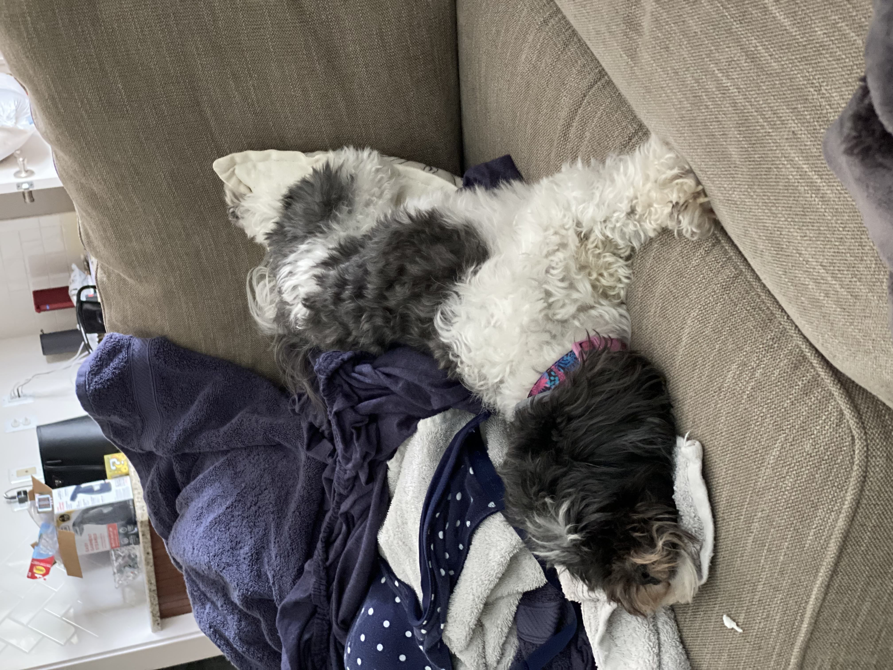
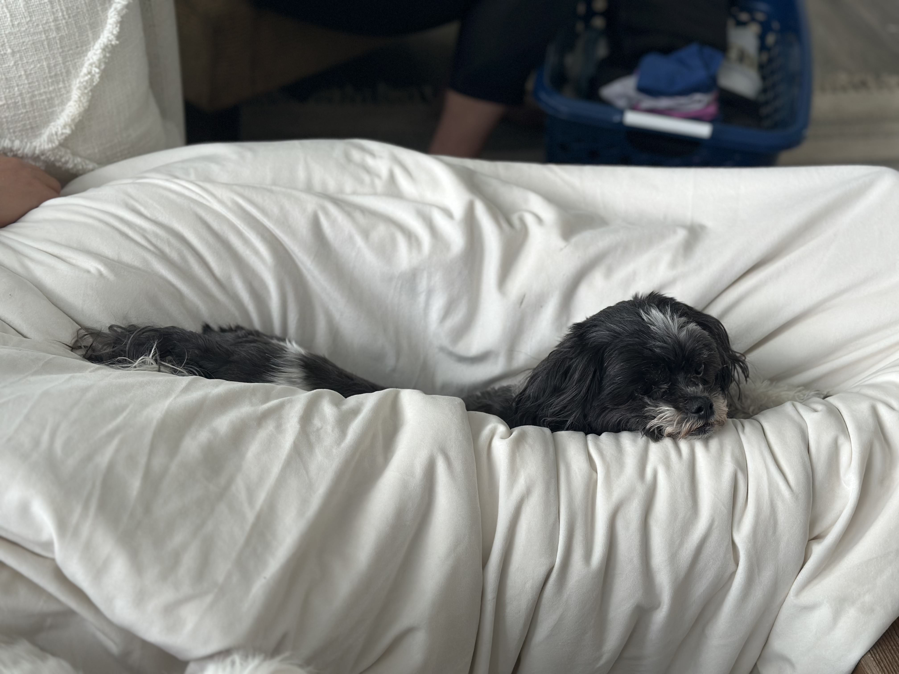
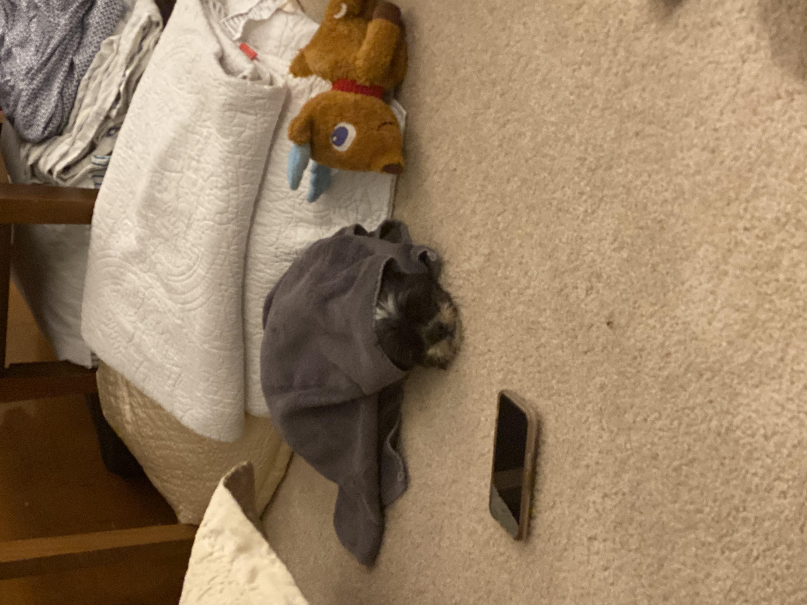
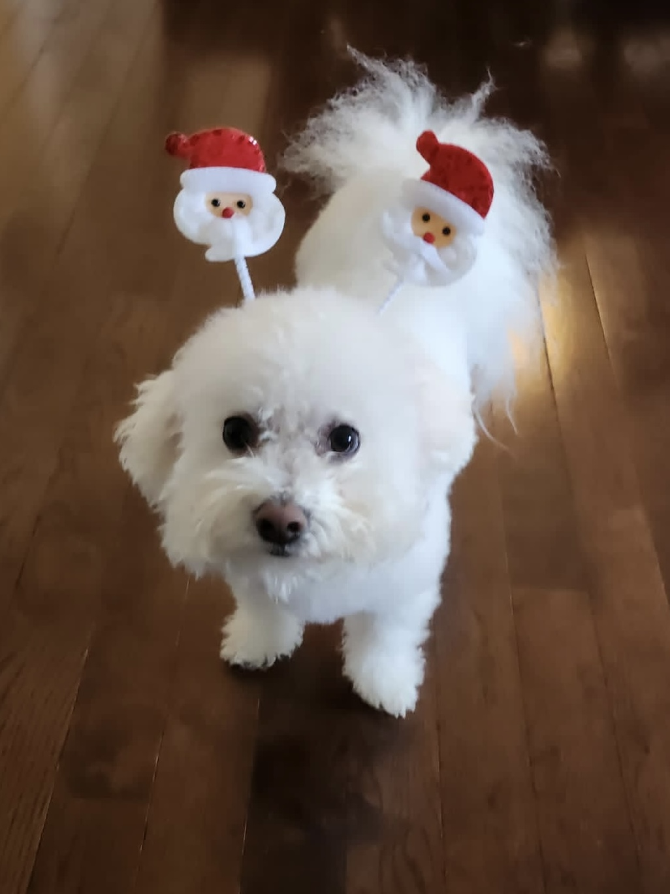
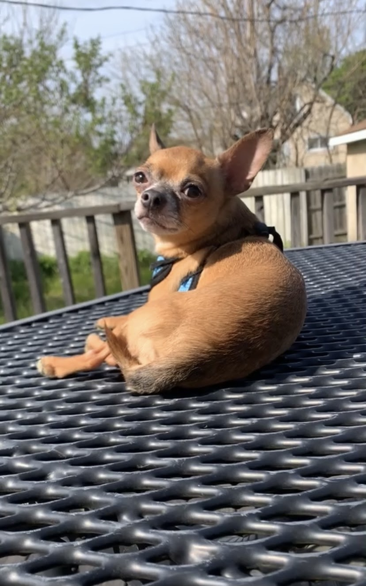

Rosie

Brown and White Bichon/Shih Tzu mix
Rosie is a small but super energetic dog. Whenever someone comes to the house, she is very quick to run up and greet them. She loves to play fetch and will not leave you alone with her toys as she begs you to play with her.
Rosie is also a wonderful lap dog. If you sit on the couch, she is quick to find a spot next to you. If you wear a blanket over your legs, you'll find her laying on your legs. She loves to cuddle and loves to be pet, so she will always be right up on you.
Photo Gallery
Rosie sleeping upside down
Rosie sleeping in between someone's legs

Rosie laying on a table
Rosie wrapped in a towel
Likes
Likes (Just write Likes)
- Treats
- Fetch
- Cuddles
Ethan Lee
Pets
Terry

Terry is a playful and spirited dachshund that loves to play fetch with his bone or tennis ball. He loves wandering in forests and finding large sticks to take home. His favorite foods are kibble and peanut butter. Terry will run around frantically when it’s time to eat at home.
My family found Terry at a shelter and decided to adopt it. He was 4 months old and is now 8 years old. Terry knows how to swim, but we don’t tend to go often. Terry got poison ivy once; however, he quickly recovered and has been doing great since.
Photo Gallery


Likes
Oreo

Black pug terrier
Oreo is a 20-pound pug terrier who is 6 years old. He loves following people around and always wants attention from anyone. He will play with any dog toys, especially the ones that you take from him. He likes going out on walks anytime of the day except when it is thunderstorming, he will be running around the house trying to find a place to hide.
After every walk, Oreo will always get the zoomies, or he will want to play fetch. He has a set schedule every day where he likes to eat early morning around 9 am and at night at 7 pm. Oreo is a very high-maintenance dog who needs a lot of attention but will give you all the love and kisses.
Photo Gallery

Oreo laying down staring at the camera

Oreo wearing a Christmas tree headband

Oreo buried in snow while wearing a winter dog jacket

Oreo sitting next to a pumpkin while wearing a candy cane headband
Likes
Likes (Just write Likes)
- Fetch
- Chicken
- Walks
- Jasmine
Sofie

Beagle mix wearing glasses
Sofie is a 15-year-old Beagle mix. Her favorite spot in the house is the living room couch. She loves to go outside, sometimes too much, leaving us to open the door for her constantly. Sofie loves freshly cut grass; she rolls around in it for hours after it gets cut.
Sofie is very old; she joined our family when I was still in a car seat. Sofie loves the weekends because she gets her favorite treat, a fried egg. Sofie loves long walks around the lake or on the trail, where she can be let free to run to her heart's content.
Photo Gallery

Beagle sitting on the favorite couch looking around

Beagle laying down on a chair

Beagle laying next to an Angry Birds pillow

Beagle with two treats on paws
Likes
Likes (Just write Likes)
- Fried Eggs
- Peanut Butter
- Bacon Strips
Jacob Timmerman
River
Fluffy Bichon Frise wearing Santa headband
River is a 7-year-old Bichon Frise. Though he is aging, he is extremely active and loves to play. He likes to throw things. He will throw his ball down the stairs and play fetch with himself if you don't give him attention. He will also throw his food and water bowl to let us know he wants more.
River is obsessed with my mom. My mom is the one who mostly walks him and gives him treats. Anywhere my mom goes, River follows. If she's gone for 2 minutes, he will frantically search the house for her. Although he likes being with people, he hates being cuddled or held.
Photo Gallery

Bichon Frise on his bed, showing who is boss
Bichon Frise posing for the camera after getting a haircut

Bichon Frise tired and yawning

Bichon Frise in a suit, ready for prom
Likes
Likes (Just write Likes)
- Attention
- Treats
- Rolling ball down the stairs
Erin Lee
Zack
African Grey Parrot
About Zack

Zack is an African grey parrot, aged around three years old. He loves flying and being outside of the cage at all times. While he's very nice, he has a habit of biting. Zack's favorite foods are unsalted sunflower seeds and mangos. He enjoys sitting on people's shoulders and chatting away. Remarkably, Zack knows over 500 words and continues to learn more every day.
Photo Gallery


Likes
- Sunflower seeds
- Flying
- Going on walks
Owner: Mohamedhussin Najaf
Yugi

Tan chihuahua sleeping on a black pillow
Yugi is a 7-year-old chihuahua who loves love and adores attention. A member of the sassy dog community, he is full of personality and character with a response for everything. Nicknamed King Yugi, he holds himself as a true royal and leader of the home, being given all the luxuries in life by his humans.
With the ability to love beyond his small body, Yugi is an attached lap dog that loves to be your sidekick. Protective, caring, and cuddly, there is never a time he isn’t there to support you and is always prepared for a short-notice nap time.
Photo Gallery



Likes
- Cuddling
- Sleeping
- Doing tricks for treats
Aileen Gonzalez